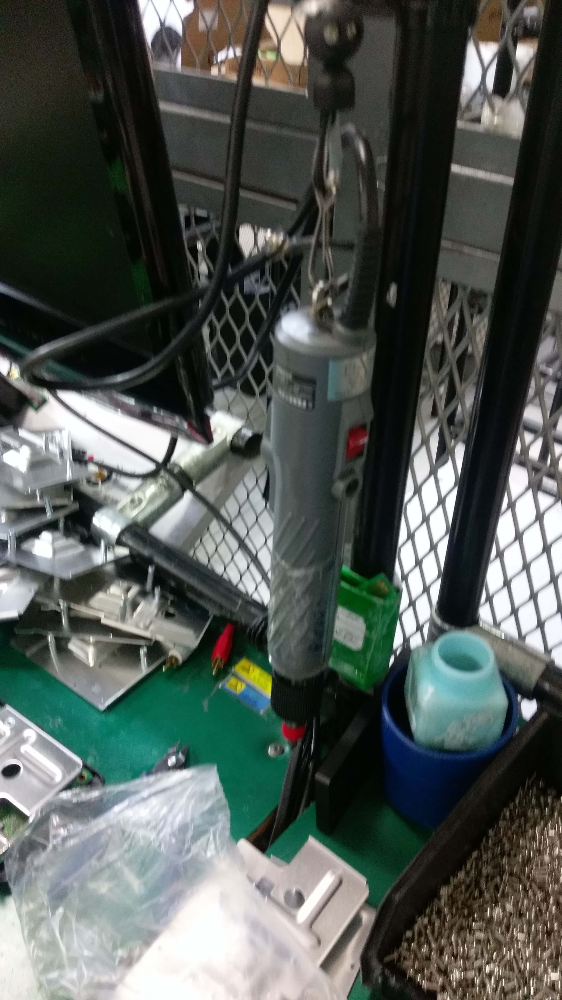
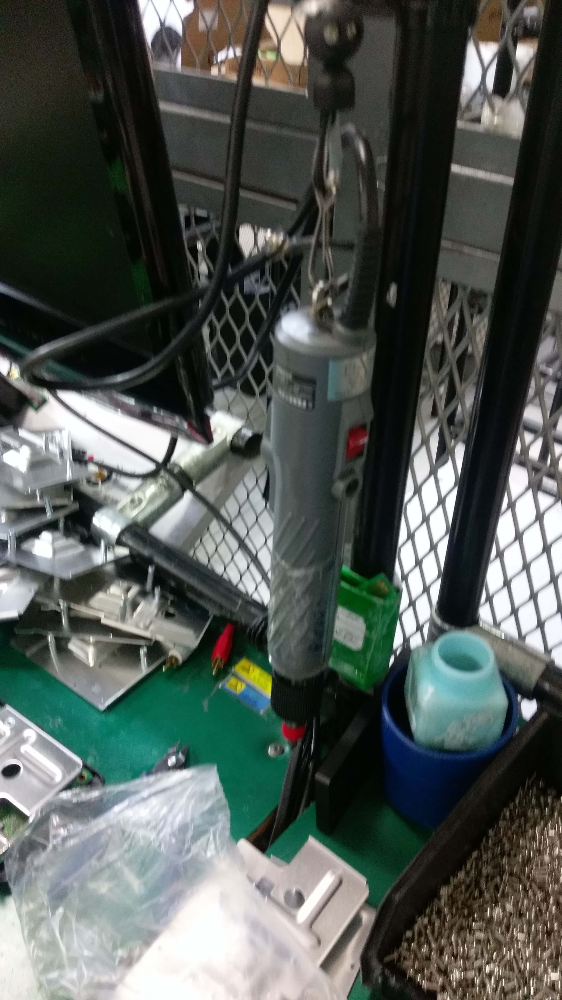
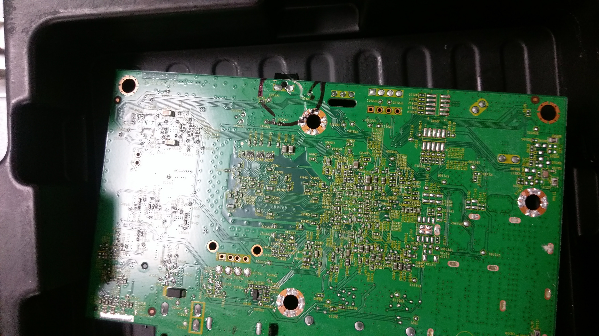
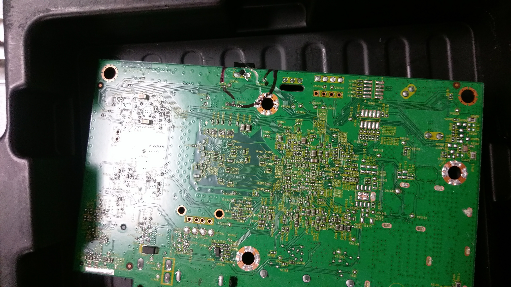
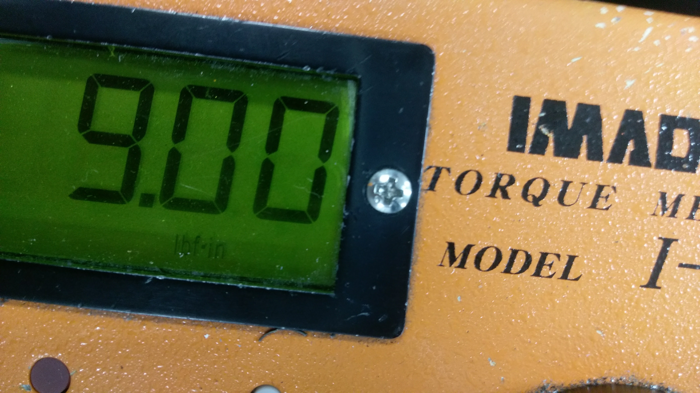
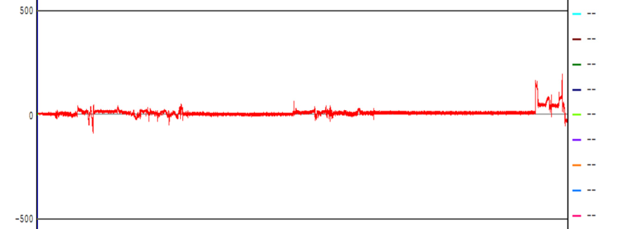
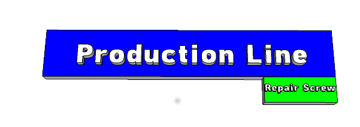
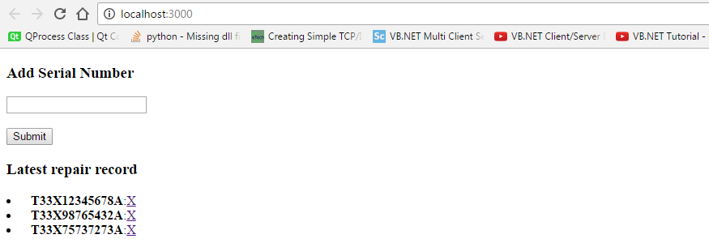
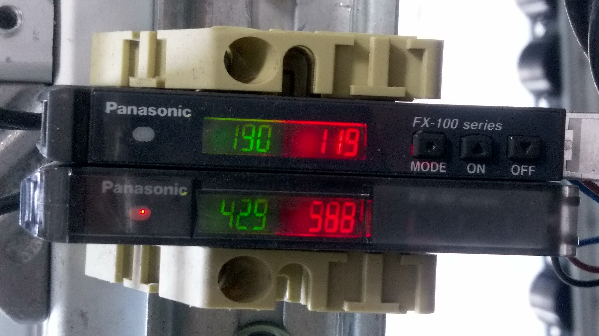

CCMX-SKYWORTH NPI Report WK 11
Table of Contents
- Improvement on the screwing process
- Appendix:
- Line 5 statistics as reference
- Possibilities for auto printing unit label
Screw Driver Error
- Every HCP92 is equipped with 7 screws inside. (Only 3 for LH01 of Technicolor.)
- The main cause for a scrap unit during the screwing.
- Material issue, Screw Threads are not well manufactured.
- Torque Force is not sufficient for inserting the screws
- An improved design for the guard when screwing is needed.
 

Observation
- The defected PCBAs can be easily repaired.
- Further damages happen frequently.
- The repair history is not recorded in the MIS system.
 

Corrective Action
- The guard is now tightly closed to the PCBA.
- Change the working instruction to increase the force.
- Make sure the BGA is not damaged while change the torque force.
 
Further improvement on the SKYWORTH production line
- 因為維修螺絲用到的工具很容易傷到PCB(拔出螺絲劃到電阻電容)，但是拔螺絲的版子沒被系統計錄。(There is no repair record related to changing the screws.)
- 因為有癌症的人再怎麼修理也是會復發。所以OBA不應該是隨機抽點，而是只挑鎖螺絲失敗的機頂盒檢查。(The units that has been changed the screws are more likely to fail during the OBA test. Therefore, we should only choose them as the targets for the OBA testing. )
- 拔出螺絲很快，為了能SKYWORTH連貨出號，產線應該嵌入一個快速維修站。SKYWORTH requests the shipping pallets to contain the consecutive numbers of units. Therefore, A repair station should be embedded to the assembly line in order to fix the failure quickly.

Implementation
- CCMX PM can request MIS to record those defected units during the screwing process.
- Another approach is to design an web app. The operators of the repair station and OBA stations need to open the CHROME in order to record and test the defected units.

Appendix
Line 5 statistics as reference
Possibilities for auto printing labels
- If CCMX wants to implement auto printing labels for SKYWORTH models, a re-design of fixture carriers is needed.
- Reason: there are three main place for calibrating the correctness printing. One of them is an adjustable fixture. However, current fixtures use a fixed design.
